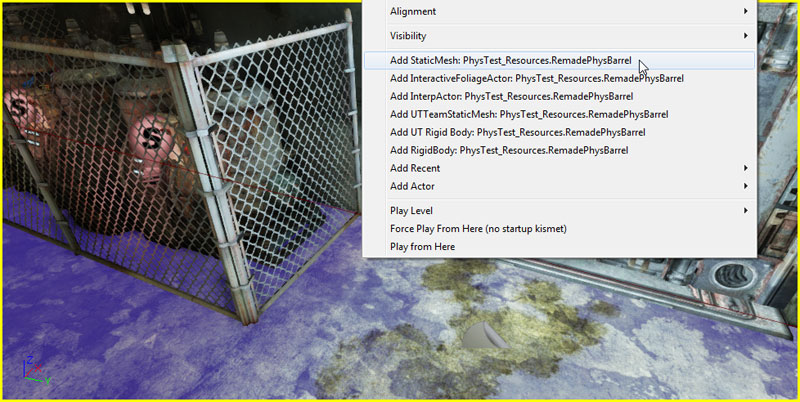
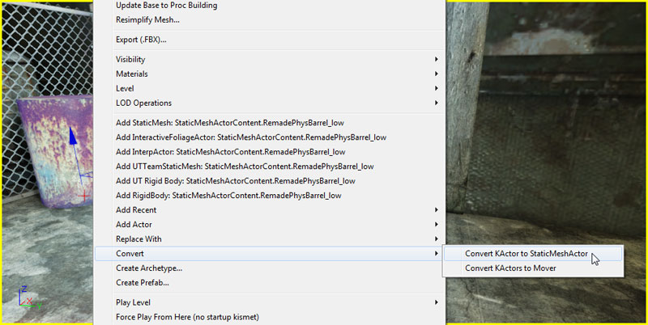
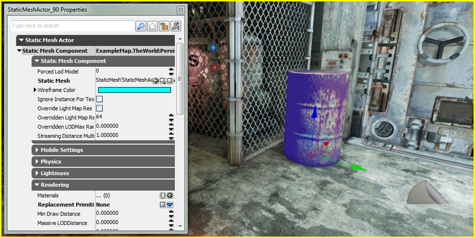
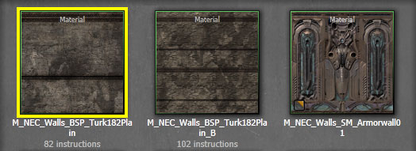
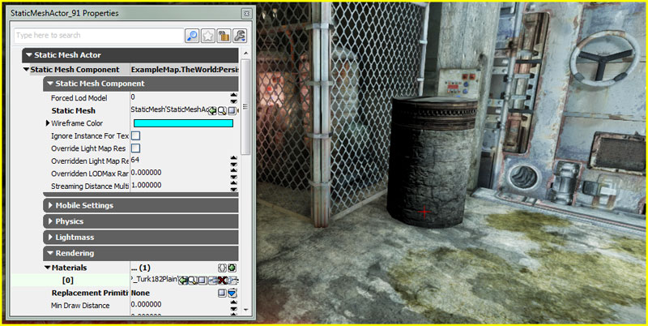
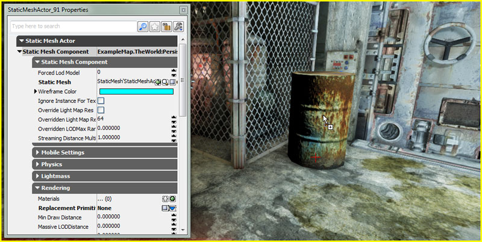
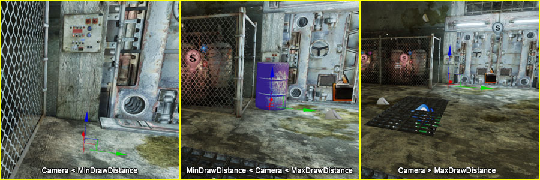

UDN
Search public documentation:
UsingStaticMeshActorsKR
English Translation
日本語訳
中国翻译
Interested in the Unreal Engine?
Visit the Unreal Technology site.
Looking for jobs and company info?
Check out the Epic games site.
Questions about support via UDN?
Contact the UDN Staff
日本語訳
中国翻译
Interested in the Unreal Engine?
Visit the Unreal Technology site.
Looking for jobs and company info?
Check out the Epic games site.
Questions about support via UDN?
Contact the UDN Staff
UE3 홈 > 스태틱 메시 > 스태틱 메시 액터 (StaticMeshActor) 사용하기
UE3 홈 > 레벨 디자이너 > 스태틱 메시 액터 (StaticMeshActor) 사용하기
UE3 홈 > 레벨 디자이너 > 스태틱 메시 액터 (StaticMeshActor) 사용하기
스태틱 메시 액터 사용하기
문서 변경내역: Jeff Wilson 작성. 홍성진 번역.
개요

놓기
- 콘텐츠 브라우저에서, 맵에 추가하려는 스태틱 메시를 스태틱 메시 액터로 선택합니다.

- 뷰포트 안 메시를 추가하려는 곳에 우클릭을 하고 맥락 메뉴에서 Add StaticMesh: [메시 애셋 경로] 를 선택합니다. 위치는 정확하지 않아도 됩니다. 메시의 위치, 방향, 스케일은 나중에 언제든 재조정할 수 있습니다.

- 프로퍼티 창 에서 보듯이 스태틱 메시가 맵에 스태틱 메시 액터로 놓입니다.

- 콘텐츠 브라우저에서 맵에 추가하려는 스태틱 메시를 스태틱 메시 액터로 선택합니다.
- 콘텐츠 브라우저에서 스태틱 메시를 좌클릭한 후 (마우스 버튼을 누른 채) 콘텐츠 브라우저에서 뷰포트에 메시를 놓고자 하는 위치로 끌어다 놓습니다. 위치는 정확하지 않아도 됩니다. 메시의 위치, 방향, 스케일은 나중에 언제든 재조정할 수 있습니다.

- 왼쪽 버튼을 놓으면 프로퍼티 창 에서 보듯 맵에 메시를 스태틱 메시 액터로 놓습니다.
다른 액터로/에서 변환
- 뷰포트에서 스태틱 메시 액터로 변환하려는 액터를 선택합니다.

- 액터에 우클릭하고 변환 > [현재 액터 종류]를 스태틱 메시 액터로 변환 을 선택합니다.

- 프로퍼티 창 에서 보듯이 액터가 스태틱 메시 액터로 변환되었습니다.

머티리얼 덮어쓰기
- 뷰포트에서 새로운 머티리얼을 할당하려는 스태틱 메시 액터를 선택하고 F4 키를 눌러 프로퍼티 창에서 그 프로퍼티를 엽니다.

- StaticMeshComponent 의 Rendering 범주에서
 버튼을 클릭하여 Materials 배열에 새 항목을 추가합니다. 스태틱 메시에 머티리얼 슬롯이 하나 이상 있는 경우, 배열의 항목이 스태틱 메시의 머티리얼 슬롯에 일치하도록 아이템을 하나 이상 추가해 줘야 할 수도 있습니다.
버튼을 클릭하여 Materials 배열에 새 항목을 추가합니다. 스태틱 메시에 머티리얼 슬롯이 하나 이상 있는 경우, 배열의 항목이 스태틱 메시의 머티리얼 슬롯에 일치하도록 아이템을 하나 이상 추가해 줘야 할 수도 있습니다.
- 콘텐츠 브라우저에서 맵의 스태틱 메시 액터에 적용하려는 머티리얼을 선택합니다.

- 머티리얼을 할당할 Materials 배열 내 상응하는 항목에 대해
 버튼을 누릅니다. 메시에 머티리얼이 적용되어 나타납니다.
버튼을 누릅니다. 메시에 머티리얼이 적용되어 나타납니다.

- 콘텐츠 브라우저에서 맵의 스태틱 메시 액터에 적용하려는 머티리얼을 선택합니다.
- 콘텐츠 브라우저에서 머티리얼에 좌클릭한 후 (왼쪽 버튼을 누른 채) 콘텐츠 브라우저에서 뷰포트 내 머티리얼을 적용하려는 스태틱 메시 액터 부분으로 끌어다 놓습니다.

- 왼쪽 버튼을 떼면 머티리얼이 적용됩니다. 이제 메시에 머티리얼이 적용되어 나타나며, 프로퍼티 창의 Materials 배열도 업데이트됩니다.
콜리전
 창 밖에 선택된 스태틱 메시 액터는 플레이어가 절대 도달할 수 없는 배경이 됩니다.
창 밖에 선택된 스태틱 메시 액터는 플레이어가 절대 도달할 수 없는 배경이 됩니다. Collision Types 콜리전 타입
Collision Type 프로퍼티는 여러가지 콜리전 세팅을 단순한 방식으로 노출시키는 메서드입니다. 언리얼 에디터에서 이 값을 바꾸면 액터의 CollideActors, BlockActors, BlockNonZeroExtent, BlockZeroExtent, BlockRigidBody 같은 로우 레벨 플랙과, CollisionComponent 도 콜리전 타입 설명에 일치하도록 설정됩니다.
Collision Types 콜리전 타입
Collision Type 프로퍼티는 여러가지 콜리전 세팅을 단순한 방식으로 노출시키는 메서드입니다. 언리얼 에디터에서 이 값을 바꾸면 액터의 CollideActors, BlockActors, BlockNonZeroExtent, BlockZeroExtent, BlockRigidBody 같은 로우 레벨 플랙과, CollisionComponent 도 콜리전 타입 설명에 일치하도록 설정됩니다.
| Collision Type | 설명 |
|---|---|
| COLLIDE_CustomDefault | 프로그래머 설정 콜리전. default properties 에 설정된 디폴트로 콜리전을 복원시킵니다. |
| COLLIDE_NoCollision | 이 액터는 다른 액터나 트레이스를 막지도 접촉하지도 않습니다. |
| COLLIDE_BlockAll | 이 액터는 다른 액터나 트레이스를 막습니다. |
| COLLIDE_BlockWeapons | 이 액터는 즉시 적중 무기같은 zero extent 트레이스만 막습니다. |
| COLLIDE_TouchAll | 이 액터는 다른 액터와 트레이스를 접촉합니다. |
| COLLIDE_TouchWeapons | 이 액터는 즉시 적중 무기같은 zero extent 트레이스만 접촉합니다. |
| COLLIDE_BlockAllButWeapons | 이 액터는 다른 액터와 non-zero extent 트레이스만 막습니다. |
| COLLIDE_TouchAllButWeapons | 이 액터는 다른 액터와 non-zero extent 트레이스만 접촉합니다. |
| COLLIDE_BlockWeaponsKickable | COLLIDE_BlockWeapons 와 같은 효과에다 플레이어 물리에 액터가 차이도록도 합니다. |
- Collide Complex 복잡 콜리전
- 켜면 이 액터의 단순화된 콜리전 지오메트리는 무시되고 폴리곤 단위로 콜리전을 계산합니다. 단순화된 콜리전 지오메트리는 언리얼 에디터에서나 3D 콘텐츠 제작 프로그램에서 생성됩니다. 폴리곤별 콜리전은 non-zero extent 트레이스, 즉 총알이 정확히 충돌하게 하는 데 좋습니다. 폴리곤별 콜리전은 비싸니 액터 이동에는 추천할 만하지 않습니다.
- Block Rigid Body 리짓 바디 막기
- 켜면 PhysX 를 사용하는 액터는 이 액터와 충돌합니다.
- No Encroach Check 침입 검사 없음
- 켜면 이 액터가 움직일 때 침입 검사를 하지 않습니다. 이 옵션을 켜면 게임 속도가 빨라지지만, 액터는 트리거를 건드리거나, 액터를 밀거나, 볼륨에 들어가고 나오거나 하지 못합니다.
- Path Colliding 패쓰 충돌
- 켜면 이 액터는 언리얼 에디터에서 패쓰를 빌드할 때 길을 막을 수 있습니다.
- Collision Component 콜리전 컴포넌트
- 이 액터의 콜리전을 계산하는 데 사용되는 컴포넌트를 가리킵니다.
디스턴스 컬링

메시가 렌더링되는 거리를 조절하는 기능은 (위에서처럼) 플레이어가 너무 멀리 있어 메시를 감추고자 할 때도 간단히 사용할 수 있습니다. 또는 저해상도 메시(들)의 최소 거리가 고해상도 메시(들)의 최대 거리와 같을 때 위치가 같은 스태틱 메시 액터를 여럿 놓아서, 하나 이상의 고해상도 메시를 저해상도 프록시로 (또는 다수의 고해상도 메시 대신 하나의 프록시로) 맞바꾸는데 사용할 수도 있습니다. 물론 그냥 스태틱 메시에 있는 LOD 시스템을 사용해도 위와 똑같은 기능을 낼 수 있지만, 이 방법으로는 언리얼 에디터에서 메시 단순화 툴 을 사용하여 기존 메시의 저해상도 버전을 만들 수 있으니 레벨 디자이너가 직접 구성할 수 있게 됩니다. 그리고 예전에 언급했듯이, 고해상도 메시 다수를 저해상도 프록시 하나로 대체할 수 있기에 폴리곤 뿐만 아니라 드로 콜 수도 낮출 수 있습니다. Massive LOD 기본 시스템도 같은 개념입니다.
UE3 의 스태틱 메시나 다른 지오메트리 표시여부 제어법 관련 자세한 정보는 Visibility Culling KR 페이지를 확인하시기 바랍니다.
물론 그냥 스태틱 메시에 있는 LOD 시스템을 사용해도 위와 똑같은 기능을 낼 수 있지만, 이 방법으로는 언리얼 에디터에서 메시 단순화 툴 을 사용하여 기존 메시의 저해상도 버전을 만들 수 있으니 레벨 디자이너가 직접 구성할 수 있게 됩니다. 그리고 예전에 언급했듯이, 고해상도 메시 다수를 저해상도 프록시 하나로 대체할 수 있기에 폴리곤 뿐만 아니라 드로 콜 수도 낮출 수 있습니다. Massive LOD 기본 시스템도 같은 개념입니다.
UE3 의 스태틱 메시나 다른 지오메트리 표시여부 제어법 관련 자세한 정보는 Visibility Culling KR 페이지를 확인하시기 바랍니다.